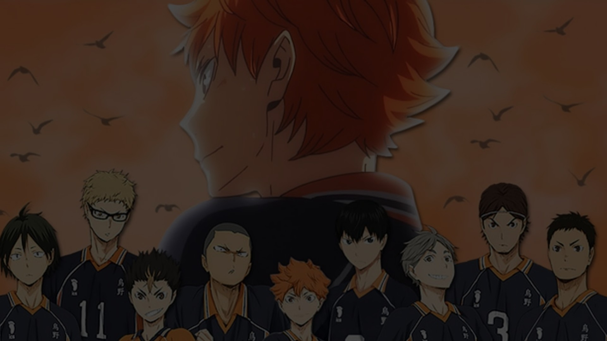

About us
We are a project that helps all fans of big sports called volleyball. This site provides many opportunities to publish news, subscribe to other people's and thus follow the latest news.
Volleyball is a sport, a team sports game in which two teams compete on a special platform separated by a net, trying to direct the ball to the opponent's side so that it lands on the opponent's court, or so that the player of the defending team makes a mistake. At the same time , players of the same team are allowed no more than three touches of the ball in a row to organize an attack .
Volleyball is a non-contact, combination sport, where each player has a strict specialization on the court. The most important qualities for volleyball players are jumping ability to rise high above the net, reaction, coordination, physical strength for effective production of attacking blows.
For fans, volleyball is a common entertainment and a way to relax due to the simplicity of the rules and the availability of equipment.
- Binder The binders organize the game and the team's attack options. They are volleyball playmakers and can play the role of a blocker or an attacker. Their task is to organize attacks.
- Central locking As a rule, these are the tallest players standing in the middle of the court, near the net, whose main task is: blocking the opponent's attacking blows, the ability to quickly put a block, making quick attacks from the third zone, as well as the ability to put a double or triple block from the side of the court.
- Libero [Li] Liberos can only play in defense. They are responsible for receiving attacks and, as a rule, they are players with quick reactions and good skills. Libero (from Ital. - free) can replace any other player on the back line, which is not considered a normal replacement. For libero, height does not matter, since they cannot block, serve or attack. This allows low players with good reception and skills to succeed in this position, and play an important role in the game.
- Doigrovschik (striker of the second tempo) Doigrovschiki are second-tempo attackers who attack from the edges of the grid and can make pipes. They need to take the ball from the binder and strike an attacking blow so that the opponent cannot block it. Most often, the players play in the second and fourth zones.
- Diagonal [D] Diagonal players are the most powerful and bouncy players who specialize mainly in attacks from the back line and mostly do not participate in the reception. The qualities of the diagonal are high strength and the ability to act even when cornered. Often it is the diagonal ones who score the final points during long draws.
- Bait The purpose of the bait is to attract the attention of the blockers. They simulate an attack to provoke the blockers and delay them while another player scores a point for the team. Some baits have great power and talent, which attracts the attention of opponents; this forces opponents to focus on the bait instead of the real attacker, thereby confusing themselves.
- Pinch hitter The players playing the glider are put in particularly important moments of the game, usually closer to the decisive point - "match point". They have to perform very laborious and risky pitches for the team - in flight, the ball vibrates and arbitrarily changes the direction of flight, which greatly complicates the reception. At the same time, the ball flies at a relatively low speed and can even stop abruptly.
- Defender In situations where the number of substitutions has not yet been exhausted or is not limited, teams can use defenders instead of or simultaneously with libero. But, unlike the latter, defenders do not have any unique rules of the game.